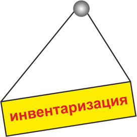

|

Ещё десяток лет назад инвентаризация была поистине головной болью руководства и работников любого предприятия. Ревизоры тщательно обследовали помещение, разыскивая заявленные в описи ценности. Наличие найденных объектов вручную отмечалось в списке. На мебели и оборудовании при этом красовались несмываемые метки с инвентарными номерами.
Инвентаризационная опись может включать тысячи товарных позиций, поэтому на проведение этой ответственной процедуры затрачивалось немало времени. Впоследствии опись попадала в бухгалтерию, где полученные данные вручную вводились в программу учёта. Вся процедура инвентаризации была сопряжена с огромными беспорядками и «выпадением» предприятия из обычного рабочего режима, то есть влекла за собой убытки в виде недополученной прибыли.
В локомотиве технологий учёта
Открытие либо закрытие магазинов, их расширение, текучка среди персонала предполагают строгий учёт материальных ценностей, поскольку он напрямую связан с рентабельностью бизнеса.
По статистике, около 15% товарных потерь спровоцированы небрежным ведением учёта. Руководство ритейл-предприятий должно всегда иметь точное представление о том, что и в каком количестве имеется на остатке! Очевидно, поэтому именно розница стала локомотивом инвентаризационных процессов.
За последние несколько лет технология проведения инвентаризации совершила значительный качественный скачок, и теперь вполне реально провести данную процедуру с минимумом неудобств, в течение считанных часов!
Предприятия розничной торговли нуждаются в проведении инвентаризаций двух типов:
- 1) по учёту основных фондов;
- 2) для контроля товарных запасов.
Решения обеих задач на современном этапе стало возможным благодаря технологиям штриховой кодировки объектов. Наличие штрих-кода является обязательным условием для производимых и импортируемых в страну товаров.
Как достичь мобильности?
Для получения информации о наличии основных фондов предприятия, а так же о поступлении, всех перемещениях и реализации товаров применяются ТСД. Так сокращённо называют терминалы сбора данных - портативные устройства, сочетающие 2 функции:
- считывание изображения штрихового кода с его последующим преобразованием;
- обработка введённых данных.
Таким образом, использование ТСД делает возможным автономный и мобильный сбор необходимой информации, её сохранение и обработку.
На первый взгляд, нет ничего сложного в простом пересчёте имеющихся товаров или оборудования. Однако, учитывая огромное, всевозрастающее количество ассортиментных позиций, многообразие торговых и складских помещений, необходимо использовать рабочую схему инвентаризации с возможностью оперативного устранения возможных сбоев и ошибок.
Как подготовиться к инвентаризации
До начала процедуры товарного учёта необходимо составить и утвердить план её проведения. При этом определяется:
- круг объектов;
- цель;
- дата начала;
- сроки проведения инвентаризации.
Рекомендуется зонировать помещения, отразив их планы в виде схем и графиков, а также распределить между исполнителями фронт работ.
Использование современных технологий на базе штрихового кодирования и ТСД позволяют производить выборочный учёт отдельных категорий товаров, а также делают возможным проведение инвентаризации без перерыва в обслуживании покупателей.
Советы по оптимизации учёта
Учёт основных средств является наиболее трудоёмким и затратным по времени, поскольку оборудование и инвентарь, как правило, не промаркированы и не каталогизированы. В таких ситуациях имеет смысл самостоятельно изготовить маркировку, используя принтеры этикеток. Целесообразно маркировать оборудование этикетками, устойчивыми к внешним воздействиям.
Участники инвентаризации наклеивают на учитываемые ценности штрих-коды, сканируют их, а затем идентифицируют объекты в базе данных.
Наклейку лучше производить рядом с заводской маркировкой, либо по «правилу правой руки» - с правого торца, в правом верхнем углу, в зоне визуальной доступности. В ситуации, когда нанесение этикетки на объект невозможно (к примеру, на металлическую инвентарную корзину, либо объект отсутствует в связи с ремонтом), этикетку со штрих-кодом можно вклеивать в специальный «Журнал объектов, промаркированных условно», а на сам наличествующий предмет наклеивать метку «условно».
На инвентаризацию товарных остатков при использовании современных технологий уходит не более 24 часов
Предварительная подготовка заключается в группировке товаров одинаковых наименований. Для учёта весового товара необходимо продукцию предварительно взвесить, упаковать и промаркировать. Учёт товарных остатков целесообразно производить традиционным методом «змейки», то есть последовательно сверху вниз и слева направо.
После подсчёта (сканирования) каждого товарного наименования рекомендуется перевернуть единицу товара стороной, на которой виден штрих-код (отфейсовать). Во избежание ошибок лучше использовать метод двойного просчёта. При первом подсчёте количество товара записывается на заранее прикреплённой метке под каждым его наименованием. Если при повторном подсчёте получается другой результат, его записывают наподобие дроби. Если результат совпадает – обводят кругом.
Выводим остатки
После сканирования всех подлежащих учёту объектов терминал сбора данных синхронизируется с компьютером, осуществляется автоматический перенос данных.
Синхронизация возможна в результате прямого подключения либо дистанционно, посредством Wi-Fi. Итоговая информация может быть предоставлена в виде графиков и привычных таблиц Excel –формата.
Существуют и специальные инвентаризационные программы, синхронизованные с 1С и другими бухгалтерскими инструментами. Вследствие этого бухгалтеру остаётся всего лишь перенести данные на свой компьютер и обновить базу.
Каждая торговая компания заинтересована в получении объективных данных о своей работе путём проведения быстрой и честной инвентаризации. Воспользуйтесь благами цивилизации и поставьте их на службу вашему бизнесу!
|

 22.11.2016 15:47
22.11.2016 15:47
 5084
5084